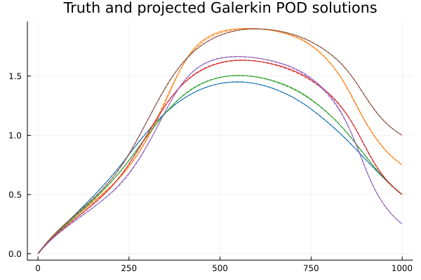
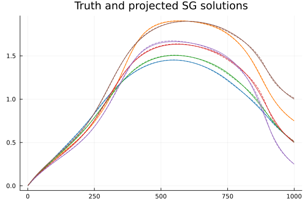
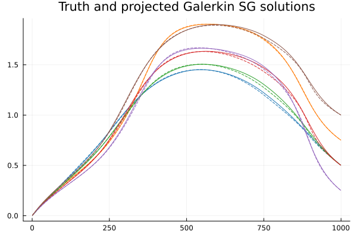
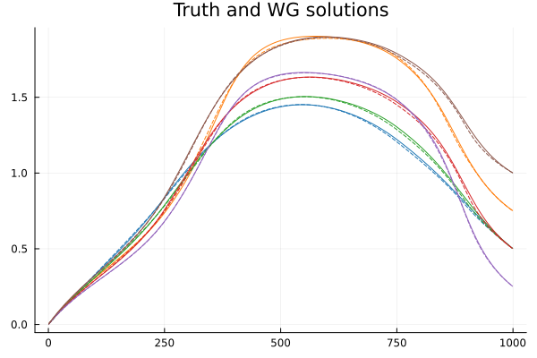

Reduced Basis Method Tutorial
This tutorial follows closely to the book Reduced Basis Methods for Partial Differential Equations by Quateroni, Alfie, Manzoni, and Negri. For more information, see their text, source 2.
Problem formulation and motivation
In this tutorial, we consider scalar, linear, elliptic, parametrized PDEs of the form
\[\mathcal{L}(u(x,p),p) = f(x,p)\]
where $p$ is some parameter (vector), and the solution $u$ depends on a spatial variable $x$ and the parameter. We are interested in such problems specifically as upon discretization, say with finite elements, the discrete problem can be written in the form
\[A(p) u(p) = b(p)\]
where $A(p)\in\mathbb{R}^{N\times N}$, $u(p)\in\mathbb{R}^N$, and $b(p)\in\mathbb{R}^N$. Additionally, we will assume affine parameter dependence, i.e., we can write $A(p)$ as
\[A(p) = \sum_{i=1}^{QA} \theta_i^A(p) A_i,\]
and $b(p)$ as
\[b(p) = \sum_{i=1}^{Qb} \theta_i^b(p) b_i.\]
Note that if a problem does not match this form, there exist algorithms ((D)EIM) to convert the problem to this form.
Upon sufficient discretization, we expect $N$ to be large, and thus the problem of inverting $A(p)$ several times for different parameter values can be expensive. A model order reduction technique is to build a reduced basis (RB) approximation to the solution. To do this, we wish to build an appropriate $r$ dimensional RB space, with $r \ll N$, on wish to use Galerkin projection.
Specifically, given linearly independent (assumed orthogonal) basis vectors to this space, $\{v_i\}_{i=1}^r$, we construct the RB space matrix
\[V = \begin{bmatrix} | & | & & | \\ v_1 & v_2 & \cdots & v_r \\ | & | & & | \end{bmatrix} \in \mathbb{R}^{N \times r}\]
such that the problem can be approximated by
\[V^T A(p) V u_r(p) = V^T b,\quad u(p) \approx V u_r(p).\]
where now the task is to invert the much smaller, $r\times r$ matrix, $V^T A(p) V$ to form $u_r(p)$, and then the solution is approximated by $V u_r(p)$. Additionally, due to the affine parameter dependence of $A(p)$, we need not store any terms that depend on $N$, rather we only need to store the matrices $V^T A_i V \in \mathbb{R}^{r\times r}$ for $i=1,\ldots,QA$.
Now, suppose we wished to solve an inverse problem, such as finding the parameter vector $p^*$ that yields some some 'optimal' solution $u^*(p)$. Or suppose that we wish to perform a sensitivity analysis of $u(p)$ on several different parameter values $p$. These tasks would typically require us to solve the full-order problem a large number of times which may be computationally expensive.
If we are willing to spend offline time to generate an RB space, $V$, with dimension $r\ll N$, then we can much more efficiently spend time online computing the Galerkin projected solution, $V u_r(p)$, at a fraction of a cost of computing the full-order solution.
We will consider a steady state heat equation for this tutorial with affine-parameter dependent spacial diffusion coefficient and forcing terms. Once discretized, it can be written in the form $A(p) u = b(p)$ with $A(p)$ and $b(p)$ each with affine parameter dependence. This model can be instantiated in ModelOrderReductionToolkit.jl by calling PoissonModel().
using ModelOrderReductionToolkit
model = PoissonModel()A(p) x(p) = b(p) with output length 999
A - (999, 999) affine parameter dependent array with 3 terms
b - (999,) affine parameter dependent array with 4 termsWe can then form a snapshot matrix over a set of $P=125$ parameter vectors.
params = [[i,j,k] for i in range(0,1,5) for j in range(0,1,5) for k in range(0,1,5)]
P = length(params)
S = zeros(output_length(model), P)
for i in 1:P
p = params[i]
u = model(p)
S[:,i] .= u
end
S999×125 Matrix{Float64}:
0.00311875 0.00313681 0.00315495 … 0.00439843 0.0045139 0.00469196
0.0062375 0.00626902 0.00630066 0.00875012 0.00897341 0.00932075
0.00935625 0.00939663 0.00943717 0.0130561 0.0133798 0.0138881
0.012475 0.0125197 0.0125646 0.0173173 0.0177345 0.0183955
0.0155938 0.0156382 0.0156829 0.0215346 0.0220386 0.0228448
0.0187125 0.0187521 0.0187922 … 0.0257091 0.0262933 0.0272374
0.0218313 0.0218615 0.0218926 0.0298417 0.0304999 0.0315747
0.02495 0.0249665 0.0249841 0.0339331 0.0346595 0.0358584
0.0280688 0.028067 0.0280669 0.0379844 0.0387732 0.0400897
0.0311875 0.031163 0.0311409 0.0419963 0.042842 0.04427
⋮ ⋱
0.0280688 0.0280714 0.0280739 … 1.01719 1.01617 1.01454
0.02495 0.0249339 0.0249174 1.01519 1.01428 1.01282
0.0218313 0.021801 0.0217702 1.01321 1.01241 1.01114
0.0187125 0.0186728 0.0186323 1.01126 1.01057 1.00948
0.0155938 0.0155492 0.0155039 1.00933 1.00875 1.00784
0.012475 0.0124301 0.0123847 … 1.00742 1.00696 1.00623
0.00935625 0.00931572 0.00927472 1.00554 1.00518 1.00464
0.0062375 0.0062059 0.006174 1.00367 1.00343 1.00307
0.00311875 0.00310066 0.00308244 1.00183 1.00171 1.00152Let's visualize the solutions.
using Plots
plt = plot()
for i in 1:P
plot!(S[:,i],label=false,alpha=0.25)
end
title!("Solution Set")GKS: cannot open display - headless operation mode active
Proper Orthogonal Decomposition/Principal Component Analysis
We know from the Schmidt-Eckart-Young theorem that the $r$-dimensional linear subspace that captures the most "energy" from the solutions in $S$ (per the Frobenius norm) is the one spanned by the first $r$ left singular vectors of $S$. More specifically, if we denote $V\in\mathbb{R}^{N\times r}$ to be the matrix whose $r$ columns are the first $r$ left singular vectors of $S$, and let $\sigma_1\geq\sigma_2\geq\ldots\geq\sigma_N$ be the singular values of $S$, then we can write that
\[||S - VV^TS||_F = \min_{\text{rank}(B)\leq r} ||A - B||_F = \sqrt{\sum_{i=r+1}^N \sigma_i^2}.\]
where $VV^TS$ is the projection of $S$ onto the columns of $V$.
We can explicitly compute the SVD and pull the first $r$ columns as
using LinearAlgebra
r = 5
U,s,_ = svd(S)
V = U[:,1:r]We can also plot the exponential singular value decay, suggesting to us that such an RBM will perform well.
plt = plot(s, yaxis=:log, label=false)
yaxis!("Singular Values")
xaxis!("Dimension")
Now, the Schmidt-Eckart-Young theorem tells us that this basis is optimal in the sense that it minimizes $l^2$ error in directly projecting our solutions, i.e., performing $u(p) \approx VV^Tu(p)$. Let's visualize the accuracy of these projections.
plt = plot()
colors = palette(:tab10)
idxs = [rand(1:P) for i in 1:6]
for i in 1:6
idx = idxs[i]
p = params[idx]
plot!(S[:,idx], c=colors[i], label=false)
u_approx = V * V' * S[:,idx]
plot!(u_approx, c=colors[i], label=false, ls=:dash)
end
title!("Truth and projected POD solutions")
However, we wished to create a reduced order model (ROM) such that given any new parameter value, we can quickly reproduce a new solution. As was noted before, we do this through a Galerkin projection
\[V^T A(p) V u_r(p) = V^T b \implies u(p) \approx V u_r(p) = u_\text{approx}(p)\]
from which we require only inverting an $r\times r$ matrix. Although this is no longer guaranteed "optimal" by the Schmidt-Eckart-Young theorem, let's see how this performs on the same snapshots. To perform this task in ModelOrderReductionToolkit.jl, we pass the snapshot matrix into a PODReductor object and form a ROM from the reductor.
pod_reductor = PODReductor(model)
add_to_rb!(pod_reductor, S)
pod_rom = form_rom(pod_reductor, r)
plt = plot()
colors = palette(:tab10)
for i in 1:6
idx = idxs[i]
p = params[idx]
plot!(S[:,idx], c=colors[i], label=false)
u_r = pod_rom(p)
u_approx = lift(pod_reductor, u_r)
plot!(u_approx, c=colors[i], label=false, ls=:dash)
end
title!("Truth and projected Galerkin POD solutions")Forming SVD of snapshot matrix
As we can see from these plots, a $5$-dimensional approximation is quite accurate here! Even though after discretization, these solutions lie in $\mathbb{R}^{999}$, we have shown that the solution manifold lies approximately on a $5$-dimensional space. Additionally, even though we were only guaranteed "optimality" from direct projection of solutions, we still have very good accuracy when we use a Galerkin projection on the problem.
This process of projection onto left singular values is typically called Proper Orthogonal Decomposition (POD). Note that forming a PODReductor will call svd on the snapshot matrix. We can access the singular values from pod_reductor.S, and the left-singular vectors from pod_reductor.V (note that left-singular vectors are usually denoted with $U$, but we use $V$ to stick with RB notation).
Strong Greedy Algorithm
An alternative way to generate this reduced basis is through a process called the strong greedy algorithm. This algorithm is called greedy, because we iteratively choose basis elements in a greedy way. We begin by choosing $v_1$ to be the column of our solution matrix, $S$ with the largest norm, and then normalized it by its length
\[||s_1^*|| = \max_i ||s_i||,\quad v_1 = \frac{s_1^*}{||s_1^*||}.\]
Now, we use a Gram-Schmidt procedure to orthogonalize all other columns of $S$ with respect to $v_1$:
\[s_i^{(1)} = s_i - (v_1^T s_i) v_1,\quad i=1,\ldots,P.\]
After the $j-1$'st element $v_{j-1}$ is chosen and all of the orthogonalization is performed, we then choose $v_{j}$ to be the column of $S^{(j-1)}$ which has the largest norm, i.e., has the worst projection error:
\[||s_j^*|| = \max_i ||s_i^{(j-1)}||,\quad v_{j} = \frac{s_j^*}{||s_j^*||},\]
and again orthogonalize
\[s_i^{(j)} = s_i^{(j-1)} - (v_j^T s_i^{(j-1)}) v_j,\quad i=1,\ldots,P.\]
Note that this procedure is exactly like performing a pivoted QR factorization on the matrix $S$. Let's form this reduced basis of the same dimension:
Q,_,_ = qr(S, LinearAlgebra.ColumnNorm())
V = Q[:,1:r]Now, we will play the same game. First, we directly project the solutions onto this space
plt = plot()
for i in 1:6
idx = idxs[i]
p = params[idx]
plot!(S[:,idx], c=colors[i], label=false)
u_approx = V * V' * S[:,idx]
plot!(u_approx, c=colors[i], label=false, ls=:dash)
end
title!("Truth and projected SG solutions")
Now, we will use an SGReductor object to form a Galerkin-projected reduced order model.
sg_reductor = SGReductor(model)
add_to_rb!(sg_reductor, S)
sg_rom = form_rom(sg_reductor, r)
plt = plot()
for i in 1:6
idx = idxs[i]
p = params[idx]
plot!(S[:,idx], c=colors[i], label=false)
u_r = sg_rom(p)
u_approx = lift(sg_reductor, u_r)
plot!(u_approx, c=colors[i], label=false, ls=:dash)
end
title!("Truth and projected Galerkin SG solutions")Forming column-pivoted QR of snapshot matrix
This procedure also performs quite well. We may expect the POD algorithm to be a bit more accurate/general as it can choose basis elements that are not "in the columns" of $S$. Similar to the PODReductor object, we can access the reduced basis from sg_reductor.V.
Weak Greedy Algorithm
Now, one downside of the above procedures was that we needed the matrix of full-order solutions ahead of time to perform either the SVD or QR factorizations. If our model was very computationally expensive, we would not want to have to do this. This is where the weak greedy algorithm is useful. It is again a greedy algorithm as we will be choosing "columns" greedily, but we wish to not have to construct all columns directly.
Suppose now, instead of having access to the columns $s_i$ which correspond to the full-order solutions $u(p_i)$, we only have access to the parameter values $p_i$. Generally, we would wish to have an a priori error estimator for a Galerkin-projected ROM such that we could loop over our parameter vectors and choose the one with the estimated maximum error. In this tutorial, we use a stability-residual approach
One can show that there exists an upper-bound on projection error, given by
\[||u(p) - V u_r(p)|| = ||A(p)^{-1} b(p) - V u_r(p)|| \leq \frac{||b(p) - A(p) V u_r(p)||}{\sigma_{min}(A(p))}\]
where $\sigma_{min}(A(p))$ is the minimum singular value of $A(p)$. Note that this upperbound on the error does not depend on the full order solution, $u(p)$. So, we loop through each parameter vector $p_i$, and select the one, $p^*$ that yields the highest upper-bound error. We then form the full-order solution $u(p_i)$, normalize it, and append it as a column of $V$. Note that unlike in the strong algorithm, since we are not using true error, we are not guaranteed to choose the next "best" column of $V$. However, if we are computing a reduced basis of size $r$, then we only need to call the full-order model $r$ times.
We now need a method to approximate (a lowerbound of ) $\sigma_{min}(A(p))$, and then the numerator of the above can be computed explicitly. One way of doing this is through the successive constraint method (SCM). This method takes advantage of the affine parameter dependence of $A(p)$, see source 1. We will form an SCM object and initialize an object to compute the norm of the residual through a StabilityResidualErrorEstimator.
error_estimator = StabilityResidualErrorEstimator(model, params);Stability Residual Error Estimator
Stability method - SCM Object for matrix (999, 999) affine parameter dependent array with 3 terms
Note that this method assumes that the model is coercive, i.e., the matrix A(p) is symmetric positive definite for each parameter. For this model, we know that this is the case if the parameter vectors have entries between 0 and 1. For a noncoercive model, add the keyword argument coercive=false. With this in place, we have enough to construct the weak greedy reductor.
wg_reductor = WGReductor(model, error_estimator)WG reductor with RB dimension 0
FOM: A(p) x(p) = b(p) with output length 999
A - (999, 999) affine parameter dependent array with 3 terms
b - (999,) affine parameter dependent array with 4 terms
ROM: A(p) x(p) = b(p) with output length 0
A - (0, 0) affine parameter dependent array with 3 terms
b - (0,) affine parameter dependent array with 4 terms
Increase RB dimension with add_to_rb!(reductor, params) or add_to_rb!(reductor, params, r)Note that we have to build the reduced basis by looping over a parameter set, we will do this by calling add_to_rb!. Afterwards, since the reductor must store the ROM at each step to make error approximations, we can simply pull it from the reductor object.
add_to_rb!(wg_reductor, params, r)(1) truth error = 5.4311e+01, upperbound error = 1.8032e+05
(2) truth error = 4.2307e+01, upperbound error = 2.2520e+03
(3) truth error = 1.1490e+01, upperbound error = 3.1515e+02
(4) truth error = 3.2129e+00, upperbound error = 7.3086e+01
(5) truth error = 1.4974e+00, upperbound error = 6.3037e+01wg_rom = wg_reductor.romA(p) x(p) = b(p) with output length 5
A - (5, 5) affine parameter dependent array with 3 terms
b - (5,) affine parameter dependent array with 4 termsWe can access the greedily chosen reduced basis by calling (note that for computational purposes, $V$ is stored as a VectorOfVectors object).
wg_reductor.V999×5 ModelOrderReductionToolkit.VectorOfVectors{Float64}:
8.63903e-5 5.62701e-5 0.000114226 4.39796e-5 4.5034e-5
0.000171617 0.000111783 0.000233579 8.96081e-5 0.000104083
0.000255713 0.000166558 0.000357921 0.000136685 0.000176661
0.000338706 0.000220615 0.000487118 0.000185019 0.000262299
0.000420627 0.000273975 0.00062104 0.00023443 0.000360547
0.000501505 0.000326654 0.000759562 0.000284745 0.000470971
0.000581367 0.000378672 0.000902562 0.000335803 0.000593152
0.000660239 0.000430045 0.00104992 0.000387448 0.000726687
0.000738147 0.00048079 0.00120153 0.000439534 0.000871186
0.000815118 0.000530925 0.00135727 0.000491923 0.00102627
⋮
0.0186801 -0.103024 0.0281005 0.0150432 -0.0069394
0.0186485 -0.103168 0.0278585 0.0147802 -0.00685647
0.0186175 -0.10331 0.0276127 0.0145194 -0.00676842
0.0185869 -0.10345 0.0273631 0.014261 -0.00667529
0.0185567 -0.103588 0.0271099 0.0140051 -0.0065771
0.018527 -0.103724 0.0268531 0.0137518 -0.00647388
0.0184978 -0.103858 0.0265929 0.0135011 -0.00636568
0.0184689 -0.103991 0.0263294 0.0132532 -0.00625252
0.0184405 -0.104121 0.0260627 0.013008 -0.00613445We can now visualize these solutions by calling wg_rom(p) on a paramater vector p.
plt = plot()
for i in 1:6
idx = idxs[i]
p = params[idx]
plot!(S[:,idx], c=colors[i], label=false)
u_r = wg_rom(p)
u_approx = lift(wg_reductor, u_r)
plot!(u_approx, c=colors[i], label=false, ls=:dash)
end
title!("Truth and WG solutions")
Comparison of the methods
Let's compare the above algorithms by comparing their average and worst case accuracy over the parameter set.
errors = [Float64[] for _ in 1:3]
for (i,p) in enumerate(params)
pod_error = norm(lift(pod_reductor, pod_rom(p)) .- S[:,i])
push!(errors[1], pod_error)
sg_error = norm(lift(sg_reductor, sg_rom(p)) .- S[:,i])
push!(errors[2], sg_error)
wg_error = norm(lift(wg_reductor, wg_rom(p)) .- S[:,i])
push!(errors[3], wg_error)
end
println("Errors for RB dimension r=$r")
println("POD mean error: $(sum(errors[1]) / length(errors[1]))")
println("POD worst error: $(maximum(errors[1]))")
println("SG mean error: $(sum(errors[2]) / length(errors[2]))")
println("SG worst error: $(maximum(errors[2]))")
println("WG mean error: $(sum(errors[3]) / length(errors[3]))")
println("WG worst error: $(maximum(errors[3]))")Errors for RB dimension r=5
POD mean error: 0.16333953592206588
POD worst error: 0.4341530046750684
SG mean error: 0.4434598097105646
SG worst error: 0.9329683303719419
WG mean error: 0.40967075796855373
WG worst error: 1.004541382449191Let's repeat the process for a reduced basis of dimension $r=15$ Let's compare the above algorithms by comparing their average and worst case accuracy over the parameter set.
oldr = r
r = 15
pod_rom = form_rom(pod_reductor, r)
sg_rom = form_rom(sg_reductor, r)
add_to_rb!(wg_reductor, params, r - oldr)
wg_rom = wg_reductor.rom
errors = [Float64[] for _ in 1:3]
for (i,p) in enumerate(params)
pod_error = norm(lift(pod_reductor, pod_rom(p)) .- S[:,i])
push!(errors[1], pod_error)
sg_error = norm(lift(sg_reductor, sg_rom(p)) .- S[:,i])
push!(errors[2], sg_error)
wg_error = norm(lift(wg_reductor, wg_rom(p)) .- S[:,i])
push!(errors[3], wg_error)
end
println("Errors for RB dimension r=$r")
println("POD mean error: $(sum(errors[1]) / length(errors[1]))")
println("POD worst error: $(maximum(errors[1]))")
println("SG mean error: $(sum(errors[2]) / length(errors[2]))")
println("SG worst error: $(maximum(errors[2]))")
println("WG mean error: $(sum(errors[3]) / length(errors[3]))")
println("WG worst error: $(maximum(errors[3]))")(6) truth error = 9.6385e-01, upperbound error = 4.5721e+01
(7) truth error = 4.1616e-01, upperbound error = 2.2715e+01
(8) truth error = 5.2367e-01, upperbound error = 1.8645e+01
(9) truth error = 1.5078e-01, upperbound error = 1.4025e+01
(10) truth error = 8.3097e-02, upperbound error = 1.4242e+01
(11) truth error = 1.7457e-01, upperbound error = 1.0368e+01
(12) truth error = 5.4074e-02, upperbound error = 7.8470e+00
(13) truth error = 1.7132e-02, upperbound error = 4.4757e+00
(14) truth error = 2.1617e-02, upperbound error = 4.7548e+00
(15) truth error = 1.8859e-02, upperbound error = 3.3648e+00
Errors for RB dimension r=15
POD mean error: 0.0028622298638518204
POD worst error: 0.008770724351391338
SG mean error: 0.004122120213871156
SG worst error: 0.011261695405919285
WG mean error: 0.003900508300378061
WG worst error: 0.012672536651311806In conclusion, the weak greedy algorithm takes advantage of the affine parameter dependence of $A(p)$ and $b(p)$, and uses an upper-bound error approximator to produce a reduced basis that approximates solutions with comparable error compared to the strong greedy algorithm and the POD algorithm without needing to compute all solutions ahead of time.
References:
- D.B.P. Huynh, G. Rozza, S. Sen, A.T. Patera. A successive constraint linear optimization method for lower bounds of parametric coercivity and inf–sup stability constants. Comptes Rendus Mathematique. Volume 345, Issue 8. 2007. Pages 473-478. https://doi.org/10.1016/j.crma.2007.09.019.
- Quarteroni, Alfio, Andrea Manzoni, and Federico Negri. Reduced Basis Methods for Partial Differential Equations. Vol. 92. UNITEXT. Cham: Springer International Publishing, 2016. http://link.springer.com/10.1007/978-3-319-15431-2.